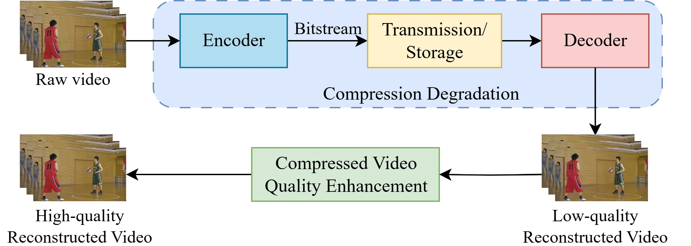
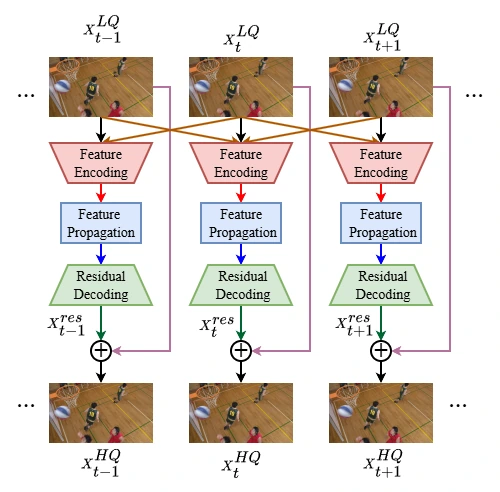
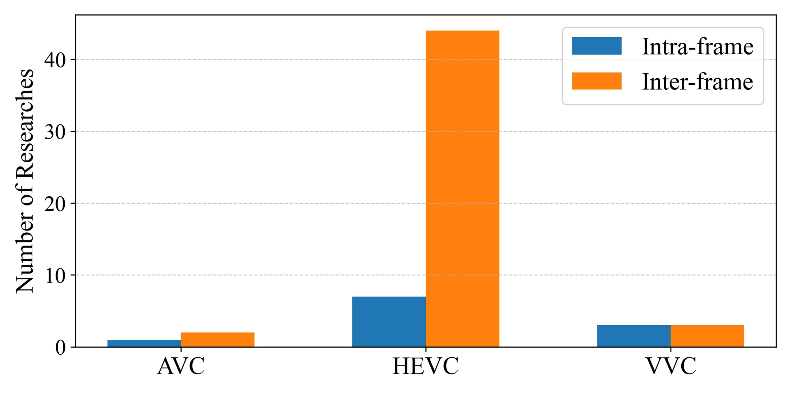
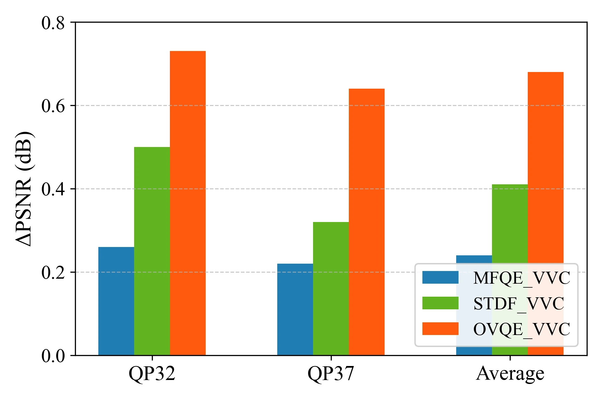
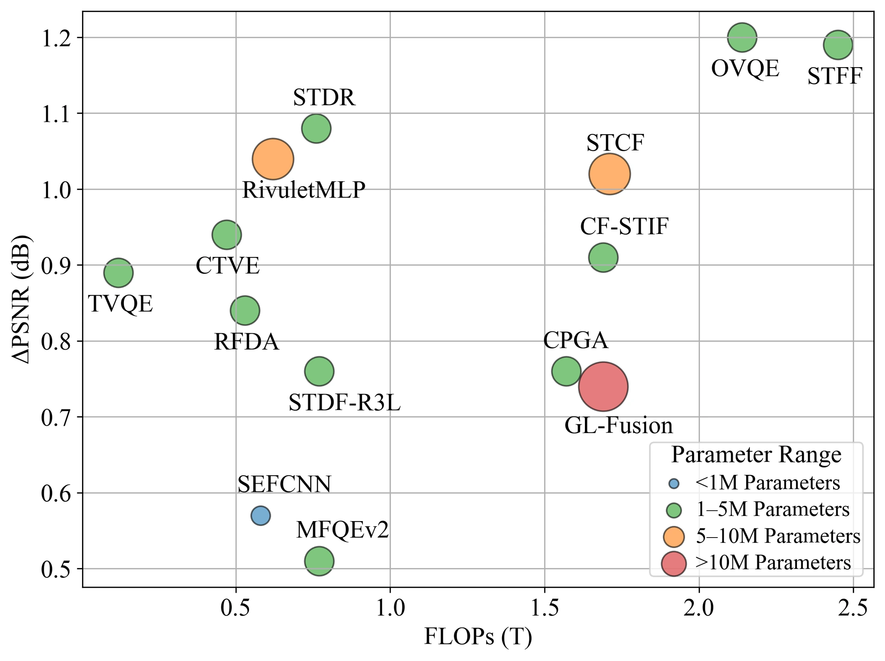

Structured taxonomy
CVQE methods are organized by architecture, coding standard, and compressed-domain feature use.
Compressed Video Quality Enhancement: Classifying and Benchmarking over Standards
International Conference on Advanced Technologies for Communications (ATC) · 2025 · Accepted
1 Faculty of Electronics and Telecommunications, VNU University of Engineering and Technology, Hanoi, Vietnam
2 Department of Computer Science, National Yang Ming Chiao Tung University, Taiwan
* Corresponding author: Xiem HoangVan.
Classifying video enhancement methods and comparing their quality-complexity trade-offs across coding standards.
This survey reviews compressed video quality enhancement (CVQE) across H.264/AVC, H.265/HEVC, and H.266/VVC. It organizes methods by architectural paradigm, coding standard, and use of compressed-domain information. A unified benchmarking framework considers standard test sequences, reconstruction quality, and computational complexity. The analysis connects codec-specific restoration challenges with model design and highlights trade-offs that inform the selection of enhancement methods for different deployment constraints.
CVQE methods are organized by architecture, coding standard, and compressed-domain feature use.
Common protocols and test sequences support multi-criteria comparisons of enhancement methods.
The review examines reconstruction quality alongside parameter counts and computational requirements.
The survey considers single-frame and multi-frame methods, architectural choices such as convolution, attention, and hybrid models, and information available in the compressed domain. Benchmarking compares quality enhancement under standardized coding conditions alongside model parameters and FLOPs.



The H.266/VVC benchmark compares PSNR improvements over compressed video, while the quality-complexity analysis places these gains alongside FLOPs and model size. The survey emphasizes that deployment decisions require considering both reconstruction performance and computational constraints.


@inproceedings{2025atccvqesurvey,
title = {Compressed Video Quality Enhancement: Classifying and Benchmarking over Standards},
author = {HoangVan, Xiem and BuiDinh, Dang and NguyenQuang, Sang and Peng, Wen-Hsiao},
booktitle = {International Conference on Advanced Technologies for Communications (ATC)},
year = {2025}
}